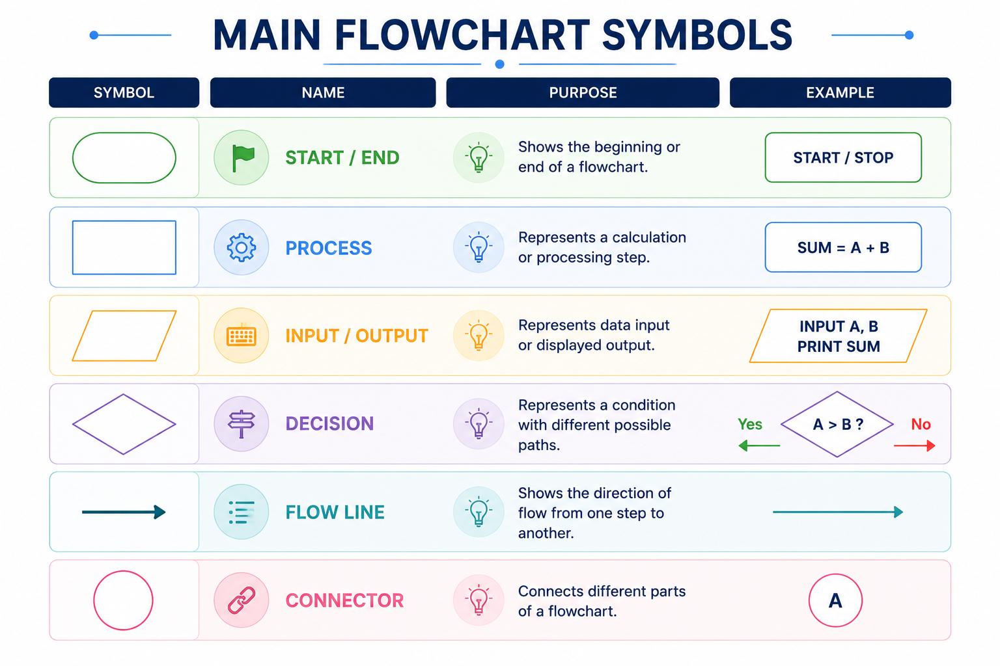

A flowchart uses standard symbols to represent different types of steps in a process. These symbols make the logic easy to read and understand.

| Symbol | Name | Purpose | Example |
|---|---|---|---|
| Oval | Start / End | Shows the beginning or end of a flowchart. | START, STOP |
| Rectangle | Process | Represents a calculation or processing step. | SUM = A + B |
| Parallelogram | Input / Output | Represents data input or displayed output. | INPUT A, B |
| Diamond | Decision | Represents a condition with different possible paths. | A > B? |
| Arrow | Flow Line | Shows the direction of flow from one step to another. | ↓ |
| Circle | Connector | Connects different parts of a flowchart. | A, B |
The Start / End symbol is used to show where a flowchart begins and where it finishes. It is commonly represented by an oval.
START marks the beginning and STOP marks the end.
The Process symbol represents an operation, calculation, assignment, or processing step. It is generally represented by a rectangle.
SUM = A + B
The Input / Output symbol is used when data is entered into the system or when information is displayed as output. It is generally represented by a parallelogram.
INPUT A, B
PRINT SUM
The Decision symbol is used when a condition must be checked. It is represented by a diamond and normally provides two or more possible paths.
A > B?
The result may be Yes or No.
A flow line is represented by an arrow. It shows the direction in which the flowchart moves from one step to the next.
Arrow = Direction of Flow
A connector is used to connect different parts of a flowchart, especially when the flowchart becomes large. A small circle is commonly used as a connector.
Connectors may contain labels such as A or B to show where the flow continues.
The following example shows how the basic symbols work together in an algorithm for adding two numbers.
Oval → Start / End
Rectangle → Process
Parallelogram → Input / Output
Diamond → Decision
Arrow → Flow
Circle → Connector
| Symbol | Use |
|---|---|
| Oval | Start or End |
| Rectangle | Process / Calculation |
| Parallelogram | Input / Output |
| Diamond | Decision / Condition |
| Arrow | Direction of flow |
| Circle | Connector |
Watch a simple Hindi explanation of standard flowchart symbols.
A short handwritten-style revision sheet of the main flowchart symbols will be provided here.
Use the mind map for quick revision of flowchart symbols and their purposes.